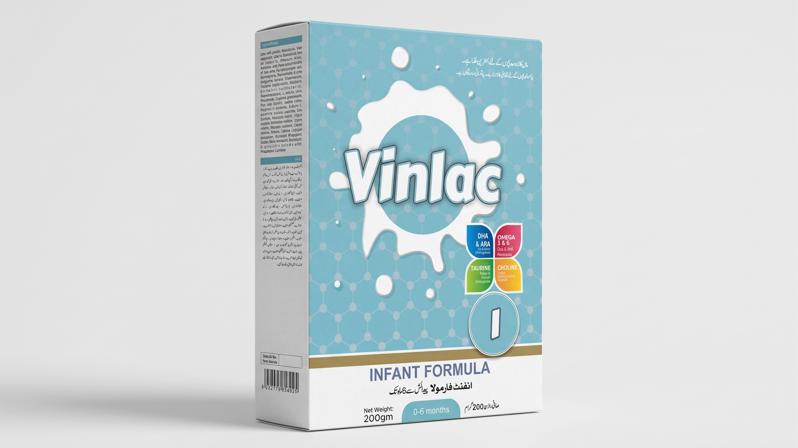
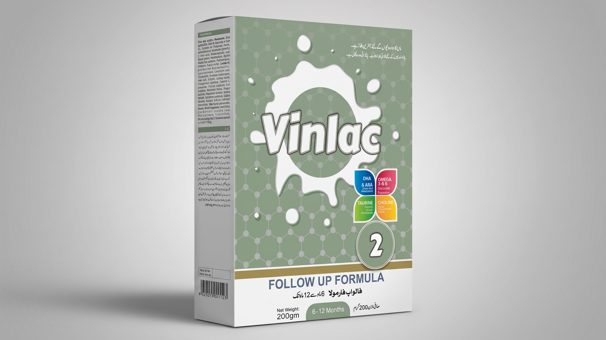
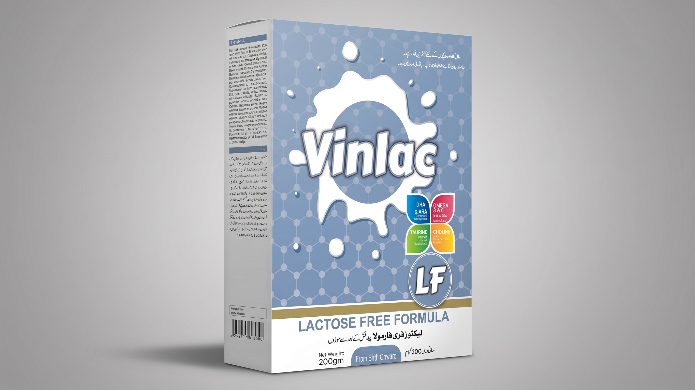

To ensure that your little one receive the best quality nutrition, Vinlac provide a complete range of formula products which are uniquely tailored to support optimum growth & development of babies from the early days of life (Vinlac 1 & 2). Whilst for infants with special dietary requirements like in case of lactose intolerance, Vinlac LF offer complete nutrition to support healthy growth of infants with effective management of diarrhea.

Vinlac 1 offers complete nutrition to support healthy growth & development of infants starting from early days of life.
Vinlac 1 provide:
Vinlac 2 is designed to meet the normal nutritional requirements of infants from six months up to 12 months of age, along with the introduction of appropriate complementary foods as part of a mixed weaning diet.
Vinlac 2:


Vinlac LF is supplemented with all the essential nutrients required to support healthy growth of infants suffering from Lactose Intolerance.
Easy To Digest — Lactose Free
Brain & Visual Development
GI Health
With Immune Health Supporting Nutrients
With Added Zinc*
*More than that found in Vinlac 1 Infant Formula
Head Office:
Office # 624, Hoor Center, North Napier Road, Karachi - Pakistan
Sales Office:
Office # 9, 2nd Floor, Zeenat Medicine Market, Fatimah Jinnah Road Quetta - Pakistan